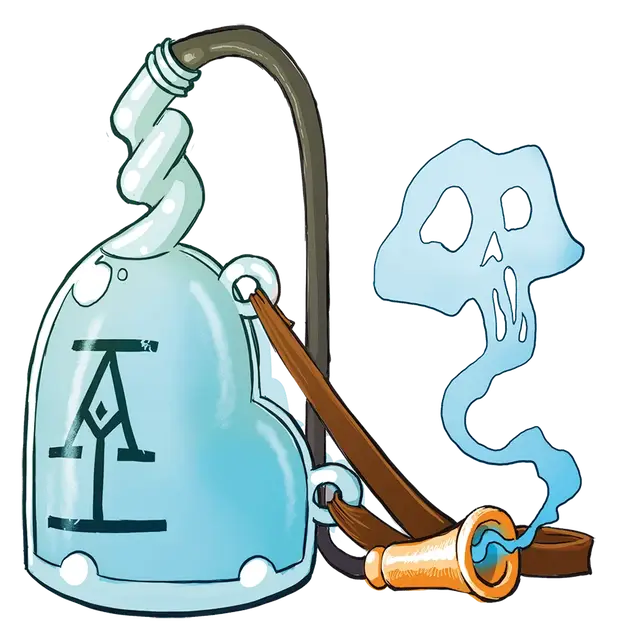

Сосуд шёпотов
Whisper Jar
Чудесный предмет, редкость варьируется (1-й ранг - обычный, 2-й ранг - необычный, 3-й ранг - редкий, 4-й ранг - очень редкий, требуется настройка)

При получении 1-го ранга вы получаете сосуд шёпотов — обычный магический предмет, напоминающий наполненную эфиром банку с длинным шлангом.
Сосуд используется для записи чужих историй и ваших собственных наблюдений, как словесная записная книжка с неограниченным пространством. Сосуд шепотов записывает так быстро, как существо может в неё говорить, и шепчет слова в том же темпе, в каком они были записаны. Активация воспроизведения конкретной записи происходит действием.
Вещи, записанные в ваш сосуд шЁПОТОВ
| к8 | Записи |
| 1 | Концертная запись единственного исполнения почти забытой театральной постановки «Кошка на раскалённой крыше» сыгранной табакси. |
| 2 | Дело всей жизни торговца информацией, который владел сосудом до тебя. |
| 3 | Каждая смелая мысль, которая у вас когда-либо была, для сокрытия того, насколько вы напуганы большую часть времени. |
| 4 | Абсолютно все, потому что все остальные вокруг вас когда-нибудь откажутся от своих слов! |
| 5 | Семь лучших мест, где можно поесть жареных крысиных шашлыков в каждом населённом пункте, который вы когда-либо посещали. |
| 6 | Полное генеалогическое древо каждой фаэрунской королевской линии, сохранившейся или утраченной. |
| 7 | Краткий обзор вашего любимого театрального выступления Джима Тёмномага. |
| 8 | Звук громких аплодисментов, которые вы часто воспроизводите. |
Шепчущая энциклопедия. При получении 2-го ранга ваш сосуд шепотов становится необычным магическим предметом, который может подключаться к более широким базам знаний компании Acquisitions Incorporated. Бонусным действием вы спрашиваете у сосуда информацию о конкретном предмете и совершаете проверку Интеллекта (История) Сл 15. В случае успеха сосуд воспроизводит запись на данную тему, сделанную где-то другим торговцем информацией Acq Inc. Это свойство сосуда шепотов не может быть использовано снова до следующего рассвета.
Предостерегающий шёпот. При получении 3-го ранга ваш сосуд шепотов получает дополнительную силу и становится редким магическим предметом. Действием вы можете заставить сосуд функционировать как волшебная палочка обнаружения врагов [wand of enemy detection], после чего он шепчет направление к враждебным существам в пределах досягаемости. Это свойство сосуда шепота не может быть использовано снова до следующего рассвета.
Магия шёпотов. При получении 4-го ранга ваш сосуд шёпотов получает доступ к ещё большему количеству магии. Действием вы можете прошептать в сосуд название одного из следующих заклинаний и наложить его с помощью сосуда: обнаружение зла и добра [detect evil and good], обнаружение магии [detect magic], обнаружение болезней и яда [detect poison and disease], поиск ловушек [find traps], опознание [Identify] или поиск животных или растений [locate animals or plants]. Это свойство сосуда шепотов не может быть использовано снова до следующего рассвета.